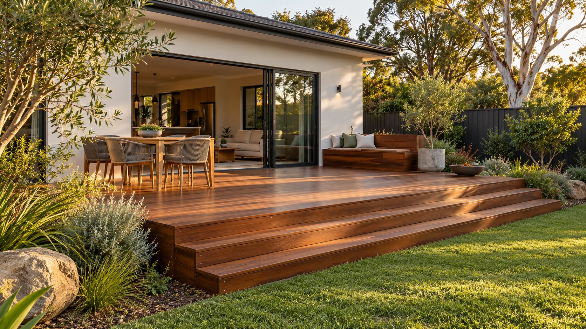
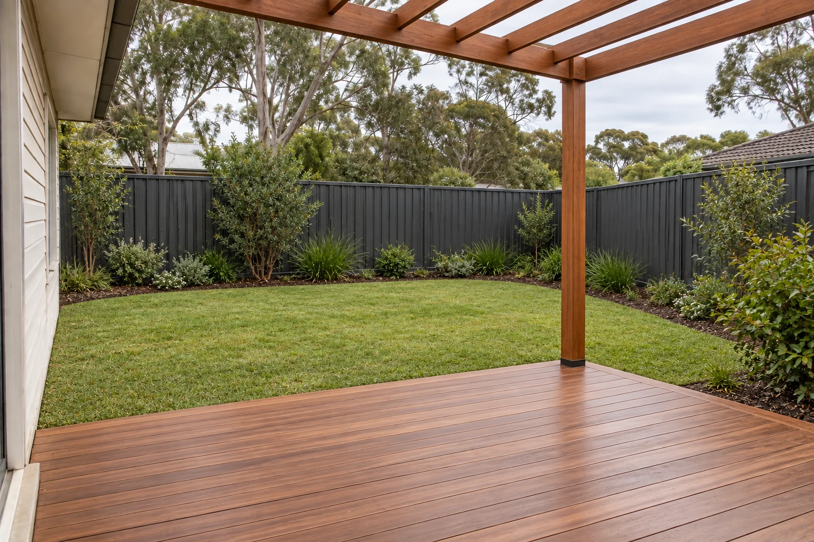

Flexible and cost aware. Expect regular coating if the surface is exposed to sun and rain.
Service 02 · Outdoor living
Room for
the weekend.
A deck that feels like a natural step from the house, with room to sit, move and stay a while.
Sketch my deck ↗
Design the way it is usedStart at the door.
Start at the door.
Work toward the garden.
The finished height determines how the deck meets the house and the lawn. Then come steps, circulation, furniture space and where water needs to go. Getting those relationships right matters more than choosing a board colour first.
- Leave enough clear space around a table or seating area.
- Check the threshold, door swing and step heights.
- Plan ventilation and drainage beneath the boards.
Beneath the boardsThe part you see
01 / Treated pine 02 / Hardwood 03 / Composite
The part you see
rests on the part you don’t.
A tidy surface starts with ground preparation, suitable footings and a subframe set for the site. Structure, clearances and approvals depend on height, load and location.
Rich natural grain and repairable boards. Oiling helps retain colour; uncoated timber will weather.
Consistent colour and lower routine upkeep. Check heat, expansion gaps and fastening details.

Build the next stepMake room
Start the quote brief ↗